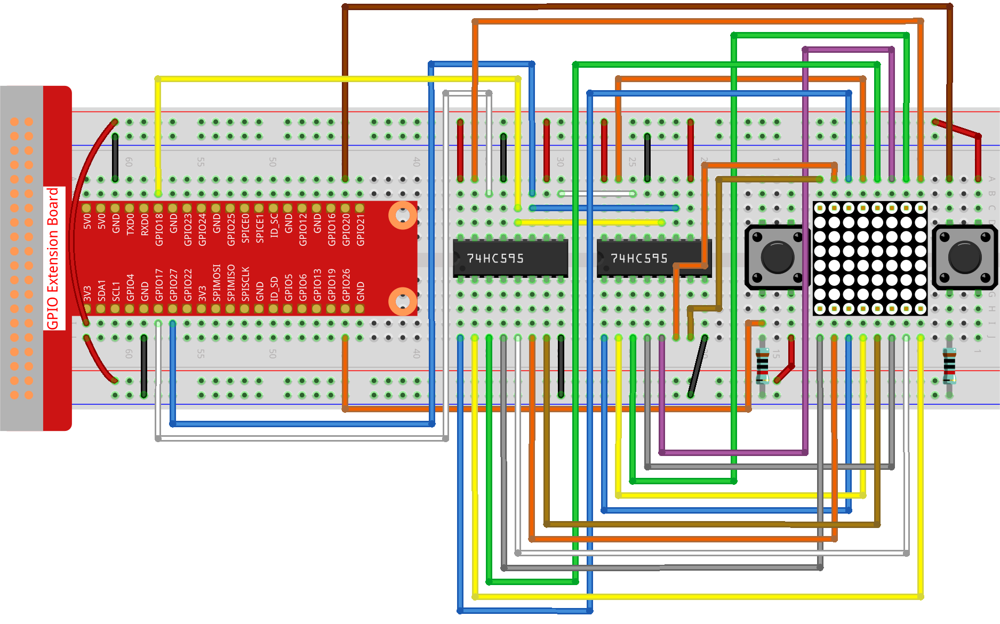

Bemerkung
Hallo und willkommen in der SunFounder Raspberry Pi & Arduino & ESP32 Enthusiasten-Gemeinschaft auf Facebook! Tauchen Sie tiefer ein in die Welt von Raspberry Pi, Arduino und ESP32 mit anderen Enthusiasten.
Warum beitreten?
Expertenunterstützung: Lösen Sie Nachverkaufsprobleme und technische Herausforderungen mit Hilfe unserer Gemeinschaft und unseres Teams.
Lernen & Teilen: Tauschen Sie Tipps und Anleitungen aus, um Ihre Fähigkeiten zu verbessern.
Exklusive Vorschauen: Erhalten Sie frühzeitigen Zugang zu neuen Produktankündigungen und exklusiven Einblicken.
Spezialrabatte: Genießen Sie exklusive Rabatte auf unsere neuesten Produkte.
Festliche Aktionen und Gewinnspiele: Nehmen Sie an Gewinnspielen und Feiertagsaktionen teil.
üëâ Sind Sie bereit, mit uns zu erkunden und zu erschaffen? Klicken Sie auf [hier] und treten Sie heute bei!
3.1.14 SPIEL – Not Not
Einführung
In dieser Lektion werden wir ein interessantes Spielgerät bauen, das wir „Not Not“ nennen.
Während des Spiels wird auf der Punkt-Matrix zufällig ein Pfeil angezeigt. Ihre Aufgabe ist es, innerhalb einer begrenzten Zeit die Taste in die entgegengesetzte Richtung des Pfeils zu drücken. Ist die Zeit abgelaufen oder wird die Taste in die gleiche Richtung wie der Pfeil gedrückt, sind Sie raus.
Dieses Spiel trainiert wirklich Ihr umgekehrtes Denken, und nun, wollen wir es ausprobieren?
Benötigte Komponenten
Für dieses Projekt benötigen wir folgende Komponenten.

Schaltplan
T-Board Name |
physisch |
wiringPi |
BCM |
GPIO17 |
Pin 11 |
0 |
17 |
GPIO18 |
Pin 12 |
1 |
18 |
GPIO27 |
Pin 13 |
2 |
27 |
GPIO20 |
Pin 38 |
28 |
20 |
GPIO26 |
Pin 37 |
25 |
26 |

Experimentelle Verfahren
Schritt 1: Bauen Sie den Schaltkreis.
Schritt 2: Öffnen Sie die Code-Datei.
cd ~/davinci-kit-for-raspberry-pi/python-pi5
Schritt 3: Führen Sie die ausführbare Datei aus.
sudo python3 3.1.14_MotionControl_zero.py
Nachdem das Programm gestartet ist, erscheint auf der Punkt-Matrix ein Pfeil, der nach rechts oder links zeigt. Ihre Aufgabe ist es, innerhalb einer begrenzten Zeit die Taste in die entgegengesetzte Richtung des Pfeils zu drücken. Dann erscheint auf der Punkt-Matrix ein „√“. Wenn die Zeit abgelaufen ist oder die Taste in die gleiche Richtung wie der Pfeil gedrückt wird, sind Sie raus, und die Punkt-Matrix zeigt ein „x“ an. Sie können auch 2 neue Tasten hinzufügen oder sie durch Joystick-Tasten für oben, unten, links und rechts – 4 Richtungen ersetzen, um den Schwierigkeitsgrad des Spiels zu erhöhen.
Warnung
Wenn die Fehlermeldung RuntimeError: Cannot determine SOC peripheral base address angezeigt wird, lesen Sie bitte Wenn gpiozero nicht funktioniert.
Code
Bemerkung
Sie können den untenstehenden Code modifizieren/zurücksetzen/kopieren/ausführen/stoppen. Bevor Sie dies tun, sollten Sie jedoch zum Quellcodepfad wie davinci-kit-for-raspberry-pi/python-pi5 wechseln. Nachdem Sie den Code geändert haben, können Sie ihn direkt ausführen, um das Ergebnis zu sehen.
#!/usr/bin/env python3
from gpiozero import OutputDevice, Button
import time
import threading
import random
# GPIO-Pins für das 74HC595 Schieberegister
SDI = OutputDevice(17) # Serieller Dateneingang
RCLK = OutputDevice(18) # Registeruhr
SRCLK = OutputDevice(27) # Schieberegisteruhr
# GPIO-Pins für Tasten
AButtonPin = Button(20) # Taste A
BButtonPin = Button(26) # Taste B
# Initialisierung von Spielvariablen
timerPlay = 0
timerCheck = 0
waypoint = "NULL"
stage = "NULL"
# Pfeil-Glyphen für die LED-Matrix-Anzeige
arrow = {
"right": [0xFF, 0xEF, 0xDF, 0x81, 0xDF, 0xEF, 0xFF, 0xFF],
"left": [0xFF, 0xF7, 0xFB, 0x81, 0xFB, 0xF7, 0xFF, 0xFF]
}
# Feedback-Glyphen für richtige/falsche Antworten
check = {
"wrong": [0xFF, 0xBB, 0xD7, 0xEF, 0xD7, 0xBB, 0xFF, 0xFF],
"right": [0xFF, 0xFF, 0xF7, 0xEB, 0xDF, 0xBF, 0xFF, 0xFF]
}
def hc595_shift(dat):
""" Verschiebt Daten in das 74HC595 Schieberegister. """
for i in range(8):
SDI.value = 0x80 & (dat << i)
SRCLK.on()
SRCLK.off()
def display(glyphCode):
""" Zeigt ein Glyph auf der LED-Matrix an. """
for i in range(0, 8):
hc595_shift(glyphCode[i])
hc595_shift(0x80 >> i)
RCLK.on()
RCLK.off()
def creatGlyph():
""" Erstellt ein neues Glyph für das Spiel und startet den Spiel-Timer. """
global waypoint, stage, timerPlay
waypoint = random.choice(list(arrow.keys()))
stage = "PLAY"
timerPlay = threading.Timer(2.0, timeOut)
timerPlay.start()
def checkPoint(inputKey):
""" Überprüft die Eingabe des Spielers und aktualisiert den Spielstatus. """
global waypoint, stage, timerCheck
if inputKey == "empty" oder inputKey == waypoint:
waypoint = "wrong"
else:
waypoint = "right"
timerPlay.cancel()
stage = "CHECK"
timerCheck = threading.Timer(1.0, creatGlyph)
timerCheck.start()
def timeOut():
""" Behandelt das Szenario eines Spielzeit-Überlaufs. """
checkPoint("empty")
def getKey():
""" Erkennt Tastendruck und löst Checkpoint aus. """
if AButtonPin.is_pressed und nicht BButtonPin.is_pressed:
checkPoint("right")
elif nicht AButtonPin.is_pressed und BButtonPin.is_pressed:
checkPoint("left")
def main():
""" Hauptspielschleife. """
creatGlyph()
while True:
if stage == "PLAY":
display(arrow[waypoint])
getKey()
elif stage == "CHECK":
display(check[waypoint])
def destroy():
""" Räumt Ressourcen bei Programmende auf. """
global timerPlay, timerCheck
timerPlay.cancel() # Spiel-Timer abbrechen
timerCheck.cancel() # Checkpoint-Timer abbrechen
# Spiel ausführen, KeyboardInterrupt für sauberen Ausstieg abfangen
try:
main()
except KeyboardInterrupt:
destroy()
Code-Erklärung
Basierend auf 1.1.6 LED-Punkt-Matrix fügt diese Lektion 2 Tasten hinzu, um ein unterhaltsames Spielgerät zu machen. Wenn Sie also nicht sehr vertraut mit der Punkt-Matrix sind, beziehen Sie sich bitte auf 1.1.6 LED-Punktmatrix.
Der Code beginnt mit dem Import der notwendigen Bibliotheken. „gpiozero“ wird für die Interaktion mit GPIO-Pins wie Tasten und Ausgabegeräten verwendet. „time“ ermöglicht das Hinzufügen von Verzögerungen, „threading“ ermöglicht das gleichzeitige Ausführen mehrerer Aufgaben und „random“ ist nützlich, um Zufälligkeit im Projekt einzuführen.
#!/usr/bin/env python3 from gpiozero import OutputDevice, Button import time import threading import random
Initialisiert GPIO-Pins für das Schieberegister („SDI“, „RCLK“, „SRCLK“) und Tasten („AButtonPin“, „BButtonPin“). Das Schieberegister wird verwendet, um mehrere LEDs mit weniger GPIO-Pins zu steuern, was für die LED-Matrixanzeige entscheidend ist.
# GPIO-Pins für das 74HC595 Schieberegister SDI = OutputDevice(17) # Serieller Dateneingang RCLK = OutputDevice(18) # Registeruhr SRCLK = OutputDevice(27) # Schieberegisteruhr # GPIO-Pins für Tasten AButtonPin = Button(20) # Taste A BButtonPin = Button(26) # Taste B
Initialisiert Variablen, die in der Spiellogik verwendet werden, wie Timer und Spielzustandsindikatoren.
# Spielvariablen-Initialisierung timerPlay = 0 timerCheck = 0 waypoint = "NULL" stage = "NULL"
Definiert binäre Muster zur Anzeige von Pfeilen und Feedback (richtig/falsch) auf der LED-Matrix. Jedes Array-Element repräsentiert eine Reihe der LED-Matrix, wobei „1“ und „0“ entsprechend bedeuten, dass eine LED an oder aus ist.
# Pfeil-Glyphen für die LED-Matrixanzeige arrow = { "right": [0xFF, 0xEF, 0xDF, 0x81, 0xDF, 0xEF, 0xFF, 0xFF], "left": [0xFF, 0xF7, 0xFB, 0x81, 0xFB, 0xF7, 0xFF, 0xFF] } # Feedback-Glyphen für richtige/falsche Antworten check = { "wrong": [0xFF, 0xBB, 0xD7, 0xEF, 0xD7, 0xBB, 0xFF, 0xFF], "right": [0xFF, 0xFF, 0xF7, 0xEB, 0xDF, 0xBF, 0xFF, 0xFF] }
Diese Funktion verschiebt ein Byte Daten in das 74HC595 Schieberegister. Sie iteriert über jedes Bit des „dat“-Bytes, setzt den „SDI“-Pin entsprechend hoch oder niedrig und toggelt den „SRCLK“-Pin, um das Bit in das Register zu schieben.
def hc595_shift(dat): """ Daten in das 74HC595 Schieberegister verschieben. """ for i in range(8): SDI.value = 0x80 & (dat << i) SRCLK.on() SRCLK.off()
Diese Funktion zeigt ein Glyph auf der LED-Matrix an. Sie sendet jede Reihe des Glyphs (repräsentiert durch „glyphCode“) und die Adresse der Reihe an das Schieberegister mit „hc595_shift“ und toggelt dann den „RCLK“-Pin, um die Anzeige zu aktualisieren.
def display(glyphCode): """ Ein Glyph auf der LED-Matrix anzeigen. """ for i in range(0, 8): hc595_shift(glyphCode[i]) hc595_shift(0x80 >> i) RCLK.on() RCLK.off()
Diese Funktion wählt zufällig ein Glyph aus dem „arrow“-Wörterbuch aus, startet den Spiel-Timer und setzt die Spielphase auf „PLAY“. Der „threading.Timer“ wird für die Zeitsteuerung im Spiel verwendet.
def creatGlyph(): """ Ein neues Glyph für das Spiel erstellen und den Spiel-Timer starten. """ global waypoint, stage, timerPlay waypoint = random.choice(list(arrow.keys())) stage = "PLAY" timerPlay = threading.Timer(2.0, timeOut) timerPlay.start()
Diese Funktion überprüft die Eingabe des Spielers gegenüber dem aktuellen Glyph. Ist die Eingabe korrekt, wird das Wegpunkt auf „right“ gesetzt, andernfalls auf „wrong“. Anschließend wird der aktuelle Spiel-Timer abgebrochen und ein neuer Timer für das nächste Glyph gestartet.
def checkPoint(inputKey): """ Spieler-Eingabe überprüfen und Spielstatus aktualisieren. """ global waypoint, stage, timerCheck if inputKey == "empty" oder inputKey == waypoint: waypoint = "wrong" else: waypoint = "right" timerPlay.cancel() stage = "CHECK" timerCheck = threading.Timer(1.0, creatGlyph) timerCheck.start()
Diese Funktion wird aufgerufen, wenn das Spiel zeitlich abläuft. Sie ruft „checkPoint“ mit „empty“ auf, um anzuzeigen, dass keine Taste rechtzeitig gedrückt wurde.
def timeOut(): """ Szenario eines Spielzeit-Überlaufs behandeln. """ checkPoint("empty")
Diese Funktion überprüft den Zustand der Tasten. Wenn „AButtonPin“ gedrückt wird (und „BButtonPin“ nicht), ruft sie „checkPoint“ mit „right“ auf. Wenn „BButtonPin“ gedrückt wird (und „AButtonPin“ nicht), ruft sie „checkPoint“ mit „left“ auf.
def getKey(): """ Tastendruck erkennen und Checkpoint auslösen. """ if AButtonPin.is_pressed und nicht BButtonPin.is_pressed: checkPoint("right") elif nicht AButtonPin.is_pressed und BButtonPin.is_pressed: checkPoint("left")
Die „main“-Funktion steuert den Spielablauf. Sie beginnt mit der Erstellung eines Glyphs und überprüft kontinuierlich die Spielphase. In der Phase „PLAY“ wird das aktuelle Glyph angezeigt und auf Tastendrücke geprüft. In der Phase „CHECK“ wird das Feedback basierend auf der Aktion des Spielers angezeigt.
def main(): """ Hauptspiel-Schleife. """ creatGlyph() while True: if stage == "PLAY": display(arrow[waypoint]) getKey() elif stage == "CHECK": display(check[waypoint])
Diese Funktion bricht alle laufenden Timer ab, wenn das Programm beendet wird, um einen sauberen Abschluss zu gewährleisten.
def destroy(): """ Ressourcen bei Programmende aufräumen. """ global timerPlay, timerCheck timerPlay.cancel() # Spiel-Timer abbrechen timerCheck.cancel() # Checkpoint-Timer abbrechen
Das Spiel wird in einem „try“-Block ausgeführt. Tritt eine „KeyboardInterrupt“ (wie das Drücken von Strg+C) auf, fängt es die Ausnahme ab und ruft „destroy“ auf, um vor dem Beenden aufzuräumen.
# Spiel ausführen, KeyboardInterrupt für sauberen Ausstieg abfangen try: main() except KeyboardInterrupt: destroy()